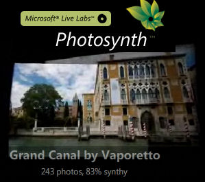

Here is an exciting technology that will help you bring to life hundreds of photos of Italy and convert them into an immersive interactive online experience. Microsoft has finally publicly released Photosynth, an online application that has the ability to reconstruct scenes or objects from a bunch of flat photographs. Using techniques from the field of computer vision, Photosynth examines images for similarities to each other and uses that information to estimate the shape of the subject and the vantage point the photos were taken from. With this information, Photosynth recreates the space and uses it as a canvas to display and navigate through the photos. As a Microsoft employee I had a chance to play with Photosynth long time ago. But other than generically blogging about it, I couldn't really share any specific details. Now that Photosynth is public domain, I encourage you to take a closer look at it and try to "synth" some of your own photos. The first time you visit the site, you'll need to download and install a special plugin for your browser (Windows PC only). - Microsoft Photosynth web site - How to introductory video - Various user generated synths of Italy